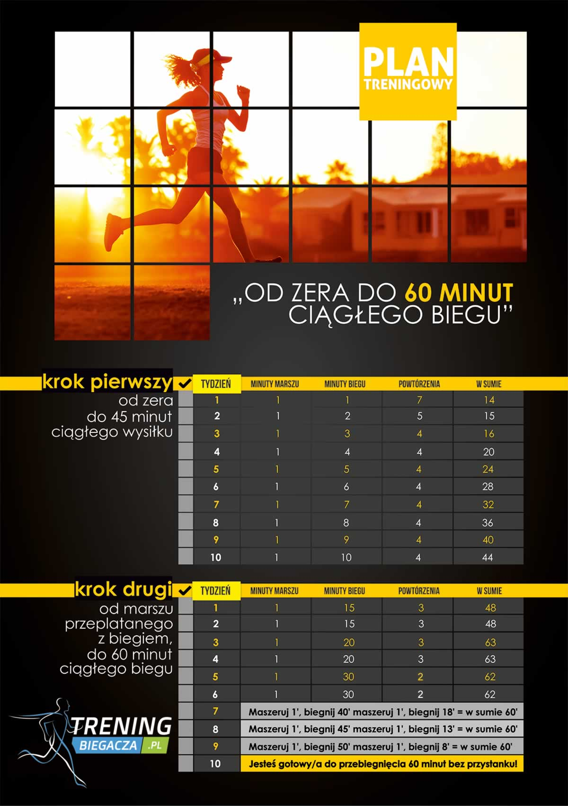

Co tak naprawdę daje nam bieganie?
Bieganie zapewnia zdrowie
Bieg to wysiłek aerobowy – czyli taki, który zwiększa wymianę tlenową i przyspiesza krążenie.
Wiąże się z tym szereg pozytywnych skutków dla zdrowia:- obniża się ciśnienie tętnicze krwi – to zmniejsza ryzyko rozwoju nadciśnienia, a w konsekwencji pozwala uniknąć takich chorób jak udar czy zawał;
- serce się wzmacnia – dzięki regularnemu bieganiu jest w stanie przepompowywać większą objętość krwi zużywając mniej energii, a więc pracuje wydajniej;
- kości i stawy także stają się mocniejsze – obciążenie treningowe przyspiesza ich mineralizację i odnowę, wskutek czego stają się odporne na złamania, kontuzje. Zmniejsza się też ryzyko osteoporozy;
- organizm jest lepiej dotleniony – bieganie sprawia, że natleniona krew szybciej dociera do wszystkich organów i części ciała, przez co lepiej funkcjonują (dotyczy to m.in. mózgu, jelit, wątroby);
- organizm lepiej radzi sobie z usuwaniem toksyn – to zasługa przyspieszonego krążenia. Szkodliwe produkty przemiany materii są szybciej usuwane;
- wzmacniają się mięśnie całego ciała – podczas biegania pracują nie tylko nogi, ale też ramiona, cały tułów razem z brzuchem, plecami, udami, pośladkami. Dzięki temu poprawia się nasza postawa, ciało jest mniej podatne na przeciążenia, rzadziej pojawiają się bóle pleców i stawów.
Bieganie daje energię
Często bez wyraźnego powodu odczuwasz zmęczenie? Zacznij biegać! Będziesz lepiej się wysypiać, a w ciągu dnia będziesz miał więcej energii. To kolejny skutek lepszego dotlenienia wszystkich tkanek organizmu. Więcej tlenu = bardziej sprawny mózg, lepsze skupienie, poprawa pamięci i więcej siły w mięśniach!Bieganie pomaga schudnąć
Bieganie to najlepszy sport odchudzający. Pozwala spalić najwięcej kalorii ze wszystkich sportów aerobowych (ile? patrz tabela niżej). Do tego przyspiesza metabolizm. Oznacza to, że organizm lepiej radzi sobie z przemianami energetycznymi, tzn. szybciej spala tkankę tłuszczową i zamienia ją w energię potrzebną np. do pracy mięśni czy podtrzymywania funkcji życiowych. Dzięki regularnemu bieganiu jesteś w stanie podkręcić swój metabolizm na tyle, by organizm nie gromadził tłuszczu, lecz zużywał go na bieżąco. A ty pozostaniesz szczupły bez restrykcyjnych diet!Bieganie modeluje sylwetkę
Lekko zarysowane mięśnie nóg, zgrabne łydki, jędrne uda i pośladki – to efekty, które na pewno dostrzeżesz po miesiącu systematycznego biegania. Brzuch stanie się bardziej płaski, a jeśli do swoich treningów dołożysz kilka sesji brzuszków tygodniowo – na pewno zbudujesz imponujący kaloryfer!Bieganie zwalcza stres
Podczas biegu codzienne problemy i zmartwienia zostawiasz za sobą. Masz okazję, by nabrać dystansu do trapiących cię spraw, dzięki czemu na drugi dzień ze świeżą głową jesteś w stanie znaleźć dla nich rozwiązanie. Taki „reset” jest bardzo ważny dla kondycji psychicznej, zwłaszcza jeśli na co dzień masz dużo obowiązków i czujesz się przytłoczony. Bieganie pozwala uniknąć wahań nastroju i depresji.Bieganie daje pewność siebie
Dzięki bieganiu zyskujesz poczucie, że zamiast bezproduktywnie spędzać czas np. na oglądaniu seriali czy przeglądaniu Facebooka, doskonalisz się i robisz coś dobrego dla siebie. To daje mnóstwo satysfakcji. Jest też atutem na polu towarzyskim – dzięki pasji do biegania wzbudzasz szacunek, imponujesz, a twoja postawa jest dla innych inspiracją. Łatwiej ci też nawiązywać nowe kontakty.Bieganie daje radość
Bieganie daje niesamowitą frajdę! Trening biegowy powoduje wyrzut endorfin – hormonów szczęścia, które wprawiają cię w doskonały nastrój i sprawiają, że patrzysz z optymizmem w przyszłość.
Ile kalorii spala bieganie?
Bieganie spala najwięcej kalorii ze wszystkich sportów wytrzymałościowych. Ile konkretnie? Zobacz wyliczenia sporządzone dla biegu trwającego godzinę w zależności od wagi i tempa biegu.
| 50 kg | 60 kg | 70 kg | 80 kg | 90 kg | |
| trucht (6,5 km/h) | 300 kcal | 360 kcal | 420 kcal | 480 kcal | 540 kcal |
| powolne tempo (8 km/h) | 415 kcal | 498 kcal | 581 kcal | 664 kcal | 747 kcal |
| średnie tempo (10 km/h) | 525 kcal | 630 kcal | 735 kcal | 840 kcal | 945 kcal |
| szybkie tempo (13 km/h) | 670 kcal | 804 kcal | 938 kcal | 1072 kcal | 1206 kcal |
| bardzo szybkie tempo (15 km/h) | 765 kcal | 918 kcal | 1071 kcal | 1224 kcal | 1377 kcal |
Jak zacząć biegać?
Pierwszy krok do zostania biegaczem masz już za sobą – czytasz ten artykuł :)
Kolejny to ustalenie, po co chcesz biegać. Jeśli nie uświadomisz sobie, co chcesz osiągnąć poprzez bieganie, nie będziesz miał motywacji do kolejnych treningów.
Musisz postawić sobie konkretny, mierzalny cel. Np. „chcę schudnąć 10 kg”, „chcę przebiec 20 km bez zatrzymania”, „za rok chcę przebiec maraton”. Unikaj ogólników, np. „chcę zacząć biegać, aby poprawić kondycję”. Z takim zamysłem prawdopodobnie poddasz się po 2-3 tygodniach, bo rezultaty nie będą mierzalne.
Masz już swój cel? Zaplanuj swoją zmianę poprzez wykonanie tych 5 prostych kroków:
- Wyznacz sobie konkretny cel
- Dobierz plan treningowy
- Dobierz buty i akcesoria
- Poznaj zasady efektywnego i bezpiecznego biegania
- Ustal trasy biegowe i dobrze je poznaj
Jaki trening wybrać dla początkujących?
Bieganie wydaje się sportem dziecinnie prostym – w końcu co to za filozofia po prostu biec? Tę czynność potrafi wykonywać każdy z nas od dziecka.
Jeśli jednak do tej pory wolny czas spędzałeś głównie na kanapie przed telewizorem lub ekranem komputera, pierwszy trening biegania może cię zaskoczyć! A raczej to, jak trudno, nie mając kondycji, przebiec 5 minut bez łapania zadyszki.
Dlatego zamiast rzucać się na głęboką wodę i ruszyć w trasę z zamiarem przebiegnięcia 10 kilometrów, skorzystaj z gotowego planu treningowego dla początkujących na 10 tygodni, polegającego na przeplataniu truchtu z szybkim marszem – w ten sposób najszybciej przyzwyczaisz organizm do wysiłku i unikniesz zakwasów:

Nie możesz zapomnieć również o odpowiedniej rozgrzewce.
Dlaczego rozgrzewka?
Zachęcam do małego eksperymentu. Rozpocznij trening bez jakiejkolwiek rozgrzewki i po prostu zacznij biec w optymalnym dla siebie tempie. Prawdopodobnie dopiero po kilkunastu minutach biegu zaczniesz czuć, że Twoje ciało w końcu zaczęło z Tobą współpracować i biegnie Ci się zdecydowanie lżej, przyjemniej.
Na następnym treningu rozpocznij trening nie od biegu, ale od krótkich ćwiczeń rozciągających. Pamiętaj, by w trakcie wykonywania ćwiczeń rozluźnić się i wykonywać je bardzo powoli. Dopiero po kilku powtórzeniach danego ćwiczenia można nieco podkręcić tempo.
Głównym celem rozgrzewki jest podniesienie temperatury wewnętrznej ciała. Ma to związek z pobudzeniem układu krążenia. Krew posiada dużą pojemność cieplną, przez to docierając do każdej tkanki podnosi temperaturę całego organizmu. Ciepłota ciała odgrywa kluczową rolę podczas rozgrzewki. Podniesienie temperatury o 1 stopień Celsjusza może podwyższyć możliwości wysiłkowe aż o 15%. Zwiększona ciepłota ciała powoduje, że maź stawowa efektywniej spełnia swoje zadanie, ograniczając tarcie między powierzchniami stawowymi. Rozgrzewka przyczynia się do zmian w układzie więzadłowo-stawowym. Zwiększona elastyczność ścięgien i więzadeł powodując zwiększenie ruchomości w stawach, co może w znaczący sposób ograniczyć ryzyko powstanie kontuzji.
Jaki strój do biegania kupić?
Bieganie stało się popularne głównie z tej przyczyny, że jest… tanie. Początkującym wystarczą tak naprawdę tylko dobrej jakości, wygodne buty (na nich nie warto oszczędzać) i opaska do trzymania przy sobie telefonu (na którą wydasz nie więcej niż 15 złotych). Kupno stroju renomowanej marki i drogich akcesoriów można zostaw sobie na później, kiedy już będziesz pewien, że bieganie cię kręci i chcesz być w nim coraz lepszy.
Poniżej znajduje się krótki filmik, który może pomóc Ci dobrać odpowiednie obuwie do biegania:
Jaką dietę stosować biegając?
Jedzenie to paliwo dla twojego organizmu. Jeśli chcesz zacząć biegać na poważnie, musisz wprowadzić do swojego jadłospisu niezbędne zmiany, tzn. ustalić ilość węglowodanów, białka i tłuszczy w diecie. Proporcje tych składników odżywczych w przypadku biegaczy powinny być inne niż w diecie osoby prowadzącej siedzący tryb życia. Inny jest też rozkład posiłków – trzeba zadbać o dostarczenie sobie odpowiednich składników przed treningiem oraz po nim.
Tutaj znajdziesz wszystkie niezbędne wskazówki, jak odżywiać się biegając:
Koniecznie ustal swoje dzienne zapotrzebowanie kaloryczne (BMR), a następnie przemnóż przez współczynnik aktywności fizycznej (w ten sposób uzyskasz CPM – całkowitą przemianę materii). Kolejny krok to odjęcie od uzyskanego wyniku 300 kcal.
W ten sposób wyliczysz, ile kalorii powinieneś przyjmować dziennie, aby chudnąć 1 kg na tydzień. Pamiętaj, jednak, że powinieneś jednocześnie trzymać się wyliczeń makro (czyli rozkładu białka, węglowodanów i tłuszczy, o których mowa była powyżej).
Jak motywować się do biegania?
Wiesz już wszystko o bieganiu: co daje, ile spala kalorii, masz gotowy plan treningowy, dietę, kupiony buty, strój… ale to dopiero początek. Najtrudniejsze w bieganiu jest zachowanie systematyczności. Kiedy już się wkręcisz, pójście na trening nie będzie dla ciebie żadnym wyzwaniem, ale pierwsze 2 tygodnie mogą być trudne. Miliony spraw będą cię odciągać od treningu: zła pogoda, ważny mecz w telewizji, ból głowy albo po prostu zwykły leń.
Nie możesz jednak się poddać. Psychologowie przekonują, że jeśli wytrzymasz do 9. biegu, potem będzie już z górki. Najważniejsze są więc 2 pierwsze tygodnie treningów. Jeżeli przez ten czas będziesz sumiennie realizował założenia planu - później bieganie wejdzie ci w krew i będzie czymś tak naturalnym jak mycie zębów.
Tylko jak zachować regularność i nie ulec pokusie odpuszczenia sobie kolejnego treningu?
Oto kilka wskazówek:
- Umieść plan treningowy w widocznym miejscu, np. na lodówce, i odhaczaj każdy kolejny bieg.
- Ściągnij aplikację do biegania, która pomoże ci śledzić postępy w treningach (liczyć spalone kalorie, pokonany dystans, czas). Dla jeszcze większej motywacji nanoś uzyskane wyniki na plan treningowy.
- Rób pomiary obwodów ciała, zwłaszcza jeśli twoim celem jest schudnięcie.
- Biegaj z muzyką – daje energetycznego „kopa” i pozwala utrzymać wysokie tempo treningu.
- Pochwal się przed znajomymi i rodziną, że bieganie to twoja nowa pasja i zamierzasz przebiec np. 10km. To będzie dla ciebie zobowiązanie, aby nie rezygnować z treningów i trzymać się wyznaczonego celu.
Zamień lenistwo na działanie. Biegaj!
Źródło tekstu artykułu